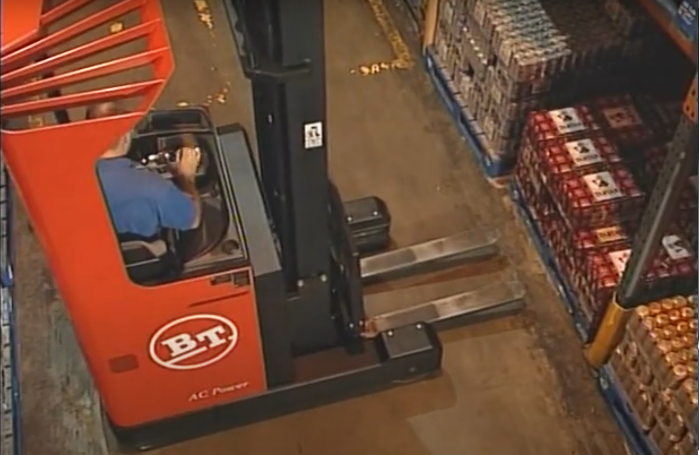

The BT Reflex reach truck is a powerful piece of equipment that requires skill and safety awareness. Here are some best practices to follow when operating the truck:
1. Pre-Operational Checks
Before starting the BT Reflex, always conduct a thorough pre-operational check. This includes checking the battery charge, hydraulic fluid, and tire condition.
Inspect the mast and forks for any signs of damage or wear.
Ensure the load backrest and other safety features are functioning correctly.
2. Proper Fork Handling
Ensure that the forks are adjusted to the correct width to match the load size.
Use smooth, controlled movements when raising or lowering the forks to avoid damage to the truck or the load.
Maintain a level mast during lifting to ensure the load remains stable.
3. Load Handling
Ensure that loads are balanced and evenly distributed on the forks before lifting.
When stacking, make sure the load is placed securely on the shelf, avoiding any overhangs.
Always keep the load as low as possible when driving, to maintain visibility and stability.
4. Maneuvering and Speed Control
Operate the BT Reflex at a speed that allows for quick stopping and safe maneuvering, especially in tight spaces.
Always be aware of pedestrians and other vehicles in the vicinity, especially in crowded warehouse environments.
When navigating corners or reversing, reduce speed to maintain full control of the vehicle.
5. Safety and Ergonomics
Use the seat belt and ensure all safety features (like the load backrest) are engaged before starting the truck.
Maintain a good posture while driving and use ergonomic practices to reduce fatigue and strain on the body during long shifts.
Be mindful of lifting techniques to prevent strain on the back and shoulders, especially when unloading or stacking heavy items.
6. Troubleshooting
If the BT Reflex encounters an issue during operation, check the control panel for any warning lights or error codes.
Common issues like non-functional forks or an unresponsive mast can often be solved by checking hydraulic fluid levels or resetting the system.
If unsure, stop the machine and report the issue to a supervisor or maintenance team to avoid further damage or unsafe conditions.
By following these best practices, you ensure both the safety of yourself and others in the warehouse, as well as the efficiency and longevity of the equipment.
4-Hour Practical Training Plan: Advanced Handling & Efficiency
Objective: Maximize skills in precise operation, efficiency, and handling in a warehouse environment using the BT Reflex.
Hour 1: Advanced Maneuvers & Tight Space Handling
Focus on driving through narrow aisles, reversing, and handling loads in tight spaces with precision. This hour includes hands-on practice with:
In this exercise, practice driving the BT Reflex through narrow aisles, ensuring you are able to maintain proper control over the vehicle while avoiding obstacles. Pay close attention to maintaining a safe speed, especially when navigating around tight turns or obstacles. The goal is to master spatial awareness and vehicle control in constrained environments.
Practicing reverse maneuvering with a load is crucial for efficient warehouse operations. This skill helps in navigating tight spaces and positioning loads accurately. The trainee will focus on slowly reversing the truck while maintaining balance and stability of the load. This ensures safety while performing tasks such as stacking or retrieving items in constrained spaces.
When handling the BT Reflex with heavy loads in tight spaces, stability and control become even more important. During this session, you’ll work on managing the truck's balance, particularly when turning and maneuvering in small aisles. Ensuring that the load does not shift or destabilize will be a key part of this exercise. Aim for smooth, controlled movements to reduce the risk of damage to the truck or products.
Hour 2: Fork Control and Load Stability
This hour will cover the precise handling of forks, adjusting widths, and placing loads safely in top-level racks. Key activities include:
Adjusting the forks properly to match the load size is critical for safe handling. You will practice adjusting the fork width to accommodate different pallet sizes. Ensure that the forks are set at the correct angle to prevent damage to the load or the truck. The goal is to maximize efficiency while maintaining safe handling.
In this part of the training, you’ll practice placing loads in storage racks that are spaced closely together. This exercise is designed to improve precision and efficiency when placing and retrieving items from higher or harder-to-reach shelves. You'll work on maintaining proper mast tilt, fork position, and load alignment to ensure smooth placement in tight spaces.
Hour 3: Efficiency & Multi-Tasking
Here, the trainee will perform continuous loading/unloading cycles while focusing on time efficiency and minimizing idle time. Activities include:
This exercise involves performing typical warehouse tasks under simulated conditions, such as moving pallets from one location to another or stacking loads. The emphasis will be on maintaining a steady pace while performing each task with accuracy. Practicing under time constraints will help develop speed without compromising safety.
Repeated loading and unloading cycles will help improve the operator's efficiency and familiarity with the truck's handling. This session includes both short and long cycles to test time management and task execution under various warehouse conditions. During these cycles, focus on reducing downtime and ensuring smooth transitions between tasks.
In this section, you’ll learn how to plan the most efficient travel and work routes. This reduces unnecessary movement and ensures that tasks are completed in the shortest possible time. You will learn to assess the warehouse layout to plan ahead and streamline your movements between load pickup and drop-off locations.
Hour 4: Troubleshooting, Safety Scenarios & Real-World Practice
The final hour focuses on basic troubleshooting techniques and safety scenario practice. This section prepares the operator to handle unexpected situations safely and efficiently. Activities include:
This training focuses on diagnosing common issues that may arise during BT Reflex operation. The operator will practice identifying problems such as hydraulic issues, non-functional forks, or battery errors. Once the problem is identified, the trainee will perform basic troubleshooting steps, including checking for error codes and performing simple resets.
Safety awareness is key during BT Reflex operations. This exercise involves handling emergency situations, such as avoiding collisions, managing load imbalances, and stopping the machine in an emergency. You'll also practice emergency shutdown procedures and report any issues to the supervisor in a controlled scenario.
This final exercise will allow you to apply everything learned during the training in a real-world scenario. The instructor will observe and provide feedback on your performance, including efficiency, safety practices, and ability to troubleshoot and respond to unexpected challenges. This is your opportunity to demonstrate competency and receive constructive feedback.
Basics of Operating a BT Reflex
Understanding the basics of operating a BT Reflex reach truck is critical for new operators. Below are key principles that will help you navigate safely and effectively. Believe it or not there is an easy way of getting into the correct position. Let's see how it works. Good modern reach trucks can actually turn on the spot. When driving a truck we refer to the pivot point which is the center of the front wheels.
So to line up and pick up that pallet drive forks first so that the pivot point is in line with the center block of the pallet.
Put on sufficient lock bearing and turn the truck. Your forks are now on target. The general rule of thumb when using your lift and reach mechanisms is to check that the parking brake is engaged ensuring the truck is stable and unable to move during this delicate process. Check how your truck works and ensure the parking brake is always safely engaged. So now let's lift a pallet.

Always take care when lifting heavy loads at height. Treat them with respect. Think of the damage that can be caused. With normal racking systems and traditional reach trucks there are some simple devices you can use to help you get it right every time. Most modern trucks have height indicators but of course you need to know the height of each beam level in advance. And never forget even with the most advanced machines that allow the best view of high-level handling you must be accurate when it comes to fork heights.
Another important factor is to consider the size and weight of pallet loads. Pallets can vary in size. Some are 800 by 1200 millimeters, others are 1000 by 1200 millimeters. Some can be used both ways whilst some are free entry and others are fully boarded. Most of the time you may know what to expect in your working environment but don't always assume.
Think about the load you're carrying. On the ground or in racking where short pallets may be positioned close together hitting and damaging another skid can easily happen. The way round it is to look out for non -standard pallets then mark their position on your forks so you know how far to insert them. So short pallets need to be picked up on the end of your forks but to be safe you need some idea of the weight of the load.
The maximum load that your truck can safely lift is based upon the 1200 millimetre long pallet. The load is centered on the halfway point which is 600 millimetres from the heel of the forks. Lifting a short load of the same weight on the end of your forks will create an imbalance. So the further the load is from the heel the lighter it has to be. It's all a question of balance. To balance a longer load the weight must be less than the maximum allowed in the normal position due to the load center shifting away from the heel. Inside your cab is a table of load weights for different load centers. Use it. Think about the load to keep your truck and your feet safely on the ground.
So let's take on that load from the very beginning.
✓ The 90 degree turn.
✓ Taking the pivot point to the center point of the pallet and turning the steering wheel to put on sufficient lock.
✓ Apply the parking brake.
✓ Be careful to check the size of the pallet and weight of the load.
✓ Checking the load center as you go.
✓ Raise your forks and at eye level check the tilt to make sure the forks are level.
✓ Continue raising them until the markers meet or the indicator point is reached.
✓ Creep the truck in, brake and finally carefully reach out.
✓ Raise the load a few centimeters then tilt the forks up to stabilize the load and reach in.
✓ Then creep the truck back so that the load clears the racking. And never operate the reach or raise or lower the forks without the parking brake applied.
✓ Lower the load and if it's a short pallet that isn't on the heel of the forks lower it to the floor and reposition it to the heel before driving off.
✓ The most important thing is to maintain visibility at all times. Always drive with the load behind you unless you're positioning the load to deposit it.
✓ Think about the length of your truck and always drive with the reach pulled in. And think about height.
✓ Always drive with the load as low as practicable.
✓ There is no safe way to carry a load high in the air. Maneuvering with load raised is one of the most dangerous things you can do with your reach truck. It could affect its stability.
Remember that any damaged vehicle or load costs dearly in expensive repair downtime and in lost revenue. And there may be a personal price to pay too.